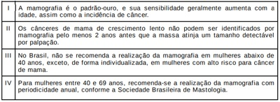
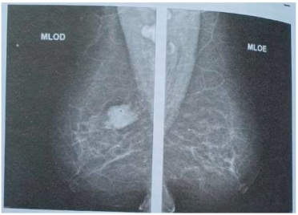
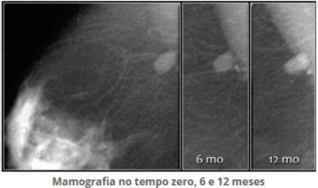
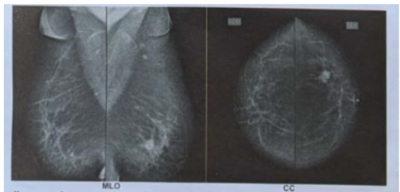

Sobre os exames de mamas:
Sobre as formas de rastreamento do câncer de mama, é correto afirmar que:
Mulher, 42 anos de idade, assintomática retorna ao ambulatório com resultado de mamogra a (4 incidências básicas): BI- RADS 0, mamas lipossubstituídas e microcalcificações agrupadas em área de 8mm). Qual é o complemento de imagem que deve ser solicitado?
O câncer de mama ainda se caracteriza como o câncer ginecológico mais prevalente em todo mundo. Assim sendo, a propedêutica é fundamental para o tratamento precoce. Assinale a alternativa que contém o método de maior sensibilidade para o rastreamento do câncer de mamas.
Idosa de 76 anos comparece à consulta, solicitando informações de quando deve realizar nova mamogra a. A última foi há dois anos. Deve-se explicar que nessa faixa etária, em relação ao rastreamento para câncer de mama, a recomendação do Ministério da Saúde é de:
Os métodos existentes para a detecção precoce do câncer de mama não reduzem a incidência, mas podem reduzir a mortalidade pela doença. Nesse sentido, o Ministério da Saúde preconiza que, na população de risco padrão para o câncer de mama, o rastreio seja realizado pela mamografia,
O American College of Radiology recomendou o Breast Imaging Reporting and Data System (BI- -RADS) como esquema padrão para a descrição de lesões mamográ cas. Qual é o BI-RADS numa paciente com achado suspeito e que deve ser considerada a biópsia?
Revisar: possível letra faltando em enunciado
O câncer de mama é, na atualidade, uma questão de saúde pública mundial. O rastreamento deve contemplar populações de risco padrão para desenvolvimento do câncer de mama, chamado risco populacional. Quanto ao rastreamento do câncer de mama, analise as afirmações abaixo. Das afirmações, estão corretas

O diagnóstico precoce do câncer de mama faz com que o tratamento seja feito na fase inicial da doença, melhorando sobremaneira o prognóstico. Segundo a Federação Brasileira de Ginecologia e Obstetrícia (FEBRASGO) e a Sociedade Brasileira de Mastologia (SBM), esse rastreamento deve ser feito
Uma mulher de 40 anos com histórico familiar de câncer de mama materno (mãe teve câncer aos 70 anos) realiza mamogra a de rastreio. 0 laudo da mamogra a foi BI-RADS 2. Segundo as orientações do Ministério da Saúde acerca da realização e resultado do exame, é correto afirmar que:
Segundo a Organização Mundial da Saúde, o climatério compreende o período de vida da mulher entre o nal da fase reprodutiva e a senilidade. Em geral, varia dos 40 aos 65 anos. Nesse período, ocorre a menopausa, definida como a interrupção permanente da menstruação após 12 meses de amenorreia. Sobre o climatério, sabe-se que:
Mulher, 52 anos de idade, realizou mamogra a de rotina que identi cou grupo de microcalci cações pleomór cas, com extensão de 0,7 cm, localizadas em quadrante superolateral de mama direita. Qual é a melhor estratégia para o diagnóstico histopatológico?
Revisar: possível letra faltando em enunciado
Em uma mamografia classificada como categoria 3 ( BI-RADS ) , qual a conduta a ser seguida?
Mulher, 35 anos, sem histórico familiar de câncer de mama ou ginecológico, sem queixas mamárias, comparece ao consultório, pois está com medo de ter câncer de mama após ter visto reportagem sobre o caso “ De acordo com as recomendações publicadas pela FEBRASGO e pela Sociedade Brasileira de Mastologia de 2017, a conduta mais adequada é:
Em mamogra a diagnóstica, mulher de 66 anos apresenta linfoadenopatia (LAP) regional unilateral. A paciente relata aplicação de vacina Pfizer-BioNTech contra Covid-19 na semana anterior. Neste caso,
Mulher de 58 anos realizou mamogra a de rastreamento, com laudo BI-RADS 5, evidenciando nódulo espiculado de limites imprecisos de aproximadamente 2cm. Ao exame, apresenta nódulo endurecido com retração do complexo areolopapilar. A conduta proposta é a realização de:
Paciente, 35 anos, realizou biopsia mamária de nódulo compatível com hiperplasia ductal atípica. Não sabe referir história familiar pois foi adotada na infância. Procura ginecologista para realizar exames para prevenção do câncer de mama. Assinale a assertiva correta quanto à classificação de risco da paciente e adequada estratégia de rastreamento com as recomendações do Colégio Brasileiro de Radiologia e da Federação Brasileira de Ginecologia e Obstetrícia (Febrasgo).
Parte do programa de rastreamento de câncer de mama é identi car mulheres com maior chance de desenvolver a doença. Pessoas com risco vitalício maior ou igual a 20% (RR > 2,5) são consideradas de alto risco. Considerando apenas parentes de primeiro grau, qual dos seguintes antecedentes familiares aumenta o risco relativo para câncer de mama?
O Breast Image Reporting and Data System (BIRADS) auxilia na padronização e divide os achados em categorias. A categoria que se refere a achados provavelmente benignos é:
Devido à sua prevalência, o câncer de mama determina um grande empenho da comunidade cientí ca em definir as melhores condições de rastreamento e detecção da doença. A mamogra a exerce um papel fundamental na detecção precoce do câncer de mama, cuja incidências mínimas preconizadas são:
Revisar: possível letra faltando em enunciado
Segundo a Febrasgo, nas mulheres sem fatores de risco, a mamogra a, com propósito de detectar lesões precursoras do câncer de mama ou câncer de mama em estádios iniciais, deve ser realizada
De acordo com as diretrizes do Ministério da Saúde/INCA para a detecção precoce do câncer de mama no Brasil, pode- se afirmar que
Paciente de 61 anos, sem queixas ginecológicas, comparece à Unidade Básica de Saúde para trazer resultado da mamogra a realizada em agosto de 2020 e que pode ser vista abaixo. No exame clínico das mamas não havia nódulos palpáveis. Menopausa aos 52 anos, G4P3A 1 e nega uso de terapia hormonal. Qual a conduta MAIS ADEQUADA para essa paciente após avaliar a mamografia?

Mulher com 43 anos, G2P2, em consulta na Unidade de Saúde da Família, informa estar bem e que veio apenas pegar pedido para realizar um exame de mamogra a para rastreamento do câncer de mama. Nega quaisquer antecedentes pessoais e familiares de alterações mamárias benignas ou malignas. Informa ter engravidado aos 27 e aos 30 anos e ter amamentado seus lhos por 15 meses cada um. Nega uso de qualquer medicação no momento ou no passado. O exame clínico das mamas é normal. Como você orientaria esta mulher de acordo com as diretrizes do SUS?
Mulher de 51 anos, nulípara, menopausa há 1 ano, retorna à consulta na unidade básica de saúde para checar mamogra a de rastreamento. Tem como antecedente uma tia avó com história de câncer de mama e fez uso de contraceptivo hormonal combinado por 20 anos. Há um ano retirou o sistema intrauterino de levonorgestrel que vinha usando como método contraceptivo nos últimos 5 anos. Não apresenta alteração detectável no exame físico. O laudo da mamogra a vem descrito como B1-RADS® 3 e apresenta a imagem abaixo. Considerando a história clínica e a imagem, assinale a alternativa que contenha a conduta mais adequada, segundo orientações do Ministério da Saúde.

Mulher de 40 anos relata que sua mãe teve câncer de mama aos 72 anos. Realiza mamogra a e procura o médico de família para orientação. O resultado da mamogra a foi BI-RADS 1. Quanto à realização e o resultado da mamogra a, respectivamente, é correto afirmar que:
A categoria 3 da classificação BI-RADS® ( Radiology,
O termo BI-RADS é uma sistematização internacional para a avaliação mamária, interpretação do exame e confecção dos laudos de exames de imagem especi camente da mama. Uma paciente de 51 anos de idade apresenta laudo mamográ co de assimetria focal à direita, palpável no exame físico mamário. Considera-se tal achado como BI-RADS de categoria
Revisar: possível letra faltando em enunciado
Mulher de 50 anos procura o consultório médico com queixa de nódulo palpável em mama direita há 1 mês. Relata que sua tia materna teve histórico de câncer de mama aos 60 anos. Ao exame físico, apresenta nódulo em mama direita, no quadrante inferomedial, regular, broelástico, móvel aos planos profundos, medindo 2,5 cm. Realizou mamogra a com achado de nódulo isodenso em mama direita, medindo 2,5 cm, BIRADS 0. Realizada uma ultrassonogra a mamária, cou comprovado tratar-se de um nódulo classificado como BIRADS 2. O achado que corresponde ao BIRADS 2 ultrassonográfico é
As recomendações do Ministério da Saúde para rastreamento do câncer de mama incluem
Paciente de 39 anos queixa-se de nódulo na mama esquerda. Ao exame, o nódulo é palpável, com consistência fibroelástica medindo 1,5 cm. O achado ultrassonográfico que sugere benignidade:
O rastreioe o diagnóstico precoce de neoplasias fazem parte do atendimento na Rede de Atenção Primária. Considerando isso, suponha que uma mulher de 53 anos de idade procure uma unidade básica de saúde para realização de exames de rotina, e o médico da Atenção Primária perceba, na face dela, uma pequena lesão papulosa, de cor rósea, aspecto “perolado”, com nos vasos em sua superfície. Ao ser questionada, a paciente informa que essa lesão apresentou crescimento lento e progressivo. Com base nesse caso clínico e nos conhecimentos médicos correlatos, julgue os itens a seguir. Na faixa etária dessa paciente, segundo o Ministério da Saúde, está indicada a realização de mamografia a cada dois anos.
Uma paciente de 56 anos de idade comparece à consulta com o ginecologista para revisão. Refere realizar exames ginecológicos de rastreamento, conforme orientação do médico clínico geral que a atendia até então. Informa que faz uso de cálcio, vitamina D e sinvastatina, por histórico de osteoporose identi cada em densitometria óssea (DMO) prévia, e dislipidemia. Recentemente recebeu diagnóstico de nefrolitíase após crise de dor renal. Relata ser tabagista e etilista desde os 23 anos de idade, e o peso atual dela é 54 kg. Teve dois partos vaginais prévios, menarca aos 12 anos e menopausa aos 38 anos de idade. Nega ter realizado terapia de reposição hormonal. Considerando esse caso clínico e com base nas recomendações do Ministério da Saúde para exames de rastreamento e nos conhecimentos médicos correlatos, julgue os itens a seguir. A paciente deve realizar a mamografia anualmente.
Paciente com 50 anos de idade percebe nódulo em sua mama direita com aproximadamente 2cm, indolor, móvel e bem delimitado, com mamografia mostrando Birads III e a ecografia IV. Qual a melhor conduta?
Em uma consulta médica na atenção primária à saúde, uma mulher de 55 anos relata nunca ter feito mamogra a, que não tem antecedentes familiares de câncer de mama e que não tem opinião formada sobre fazer ou não o exame. Embora haja polêmica na literatura científica sobre o tema, e por causa dela, assinale a conduta mais indicada para o médico:
Mulher na menopausa, com 53 anos, realiza uma mamogra a de rotina que apresenta um laudo com “microcalci cac pleomo superior externo da mama esquerda”. Em sua última mamografia, realizada há dois anos, não apresentava essas alterações. Utilizando o método BI-RADS™ (Breast Imaging Reporting and Data System), o achado na mamogra a dessa paciente e mais compatível com classificação:
Em relação ao rastreamento de câncer de mama na rede pública, o Ministério da Saúde recomenda a realização da mamografia em mulheres com idade
Mulher de 30 anos, nuligesta, apresenta nódulo de mama direita, palpável, indolor e que persiste após 1 ciclo menstrual. Relata que uma tia teve câncer de mama aos 60 anos. O ultrassom de mamas evidenciou nódulo sólido de 1,8 cm - BI- RADS-3. Qual seria a melhor conduta, de acordo com as diretrizes de conduta para diagnóstico e terapêutica?
“O Canadian Radiographic Breast Screening Study: randomised screening trial ” chegou à conclusão de que o screening por mamogra a não reduz a mortalidade por câncer de mama nas faixas etárias de 40- 49 anos e de 50-69 anos, após um seguimento de 25 anos de suas 89.835 participantes. Em revisão sistemática de oito estudos randomizados, em 2013, incluindo 600.000 mil mulheres entre 39 e 74 anos, Gøetzche conclui que o malefício causado pelo sobrediagnóstico sobrepõe-se ao benefício da detecção precoce: de 2.000 mulheres submetidas ao rastreamento por 10 anos, uma vai evitar a morte por câncer de mama, mas 10 mulheres saudáveis serão tratadas desnecessariamente e 200 mulheres experimentarão estresse psicolo Sobre o rastreamento de câncer de mama, considerando riscos e benefícios envolvidos, assinale a alternativa correta em relação às recomendações atuais do Ministério da Saúde e Instituto Nacional do Câncer:
Paciente de 45 anos trouxe à consulta mamogra a mostrando lesão nodular à esquerda categorizada como BIRADS 4B. A ultrassonogra a mamária revelou uma lesão de 2 cm, hipoecogênica, com bordas mal delimitadas, crescimento anteroposterior, com 1,5 cm de diâmetro, localizada no quadrante inferomedial da mama esquerda, classificada também como BIRADS 4B. Ao exame físico, não foram palpados linfonodos axilares ou em fossa supraclavicular suspeitos. Na mama esquerda, em local correspondente ao do nódulo, foi palpado nódulo mal definido, não aderido à pele ou a planos profundos. Com base no quadro, a conduta mais adequada é
O médico de família e comunidade recebeu Cláudia, de 43 anos de idade, que foi a seu consultório por indicação de um amigo. Nega comorbidades, uso de medicamentos ou histórico familiar de doenças. Faz uso de álcool (um copo de caipirinha aos nais de semana), não fuma e pratica atividade física três vezes por semana. Nega doenças na família. Gostaria de fazer todos os exames que têm direito pelo plano e sempre teve o hábito de fazer exames anuais, mas os últimos foram há dois anos e estavam normais (Papanicolau, mamogra a, ultrassonogra a transvaginal e de tireoide e exame de sangue). Ao exame físico, sem alterações, pressão arterial de 108 x 72 mmHg e IMC de 28. Com base nessa situação hipotética, nas orientações de rastreamento do Ministério da Saúde e nas revisões do US Task Force, assinale a alternativa incorreta.
Paciente de 41 anos procurou ginecologista com queixa de nódulo em mama direita há 30 dias sem dor. O exame ginecológico foi normal, inclusive o exame das mamas. Foi solicitada mamogra a cujo resultado foi BI-RADS 3 com achado de microcalci cações tipo ""cálcio de leite"" no quadrante superior externo da mama direita. Diante desses achados, a conduta deve ser:
Mulher com 41 anos, G2P2, lactou duas vezes por até um ano, refere que fez a primeira mamogra a de rastreamento há quinze dias. Como o laudo mostrou BI- RADS®3, veio à consulta para esclarecer algumas dúvidas. Deseja nova gestação e gostaria de engravidar novamente o mais breve possível, pois teme ter di culdades e está preocupada com possível gestação de risco. Qual orientação dar a esta paciente?
Mulher de 67 anos de idade, cozinheira, vem para consulta, com demanda de prevenção de doenças e promoção da saúde. Nega doenças prévias. É tabagista 30 maços-ano e tem hábitos sedentários. Nega etilismo ou uso de drogas ilícitas. Ao exame clínico: dentes em mal estado de conservação, IMC= 32kg/m², circunferência abdominal 108 cm, PA= 136x70 mmHg, frequência cardíaca= 76bpm, sem outras alterações. Dentre as alternativas abaixo, qual delas apresenta dois exames que devem ser solicitados para esta paciente?
Mulher de 41 anos realizou sua primeira mamogra a e levou-a ao ginecologista. O exame apontou para um nódulo regular, arredondado com 0,6 cm no quadrante inferior externo da mama direita – BI-RADS 3. Assinale a alternativa que apresenta a interpretação e a conduta corretas frente a esse achado.
Mulher, 55a, procura atendimento médico por alteração de exames de rotina. Mamogra a: nódulo na mama esquerda, irregular e microlobulado, medindo 18mm. Ultrassonogra a: nódulo hipoecóico, irregular e microlobulado, BIRADS® 5. A CONDUTA É:
Cada vez mais se exigem transparência, clareza, objetividade e simplicidade sobre os benefícios e danos potenciais nas orientações profissionais e institucionais sobre os rastreamentos. Dentre as orientações a uma mulher de 51 anos que nunca fez rastreamento mamográ co e pergunta sobre ele, é correto orientar que:
Revisar: possível letra faltando em enunciado
Paciente realizou mamogra a que não definiu uma lesão adequadamente, sendo considerada um exame incompleto. A classificação de BI-Rads e a conduta referente a esse exame, respectivamente, são:
Mulher, 28 anos, com massa palpável em mama direita, indolor, móvel de cerca 3cm. Ultrassonogra a: BI-RADS 3. Mamografia complementar: BI-RADS 4. A conduta mais adequada para esta paciente é:
Mulher de 61 anos realizou mamogra a que evidenciou nódulo espiculado medindo cerca de 3cm, categoria 5 no sistema BI-RADS. Qual a conduta mais adequada para o caso?
Vem para consulta uma mulher de 50 anos com o seguinte histórico: quatro gestações, todas terminaram em parto por via vaginal, ainda menstrua regularmente. Seu esposo e único parceiro sexual da vida foi submetido a vasectomia logo após o nascimento de seu último lho há 15 anos e está impotente há 1 ano por complicações de um Diabete. A paciente faz acompanhamento com um clínico e seus exames laboratoriais, recentes estão normais. A rma não ter realizado nenhuma consulta com ginecologista nos últimos sete anos. Nega casos de câncer de ovário ou de mama em familiares de primeiro grau. Assinale a alternativa que descreve os exames que devem ser solicitados para prevenção do câncer. I - Citologia oncótica, mamografia, ecografia mamaria, ecografia pélvica transvaginal. II - Citologia oncótica, colonoscopia, mamografia, rastreamento da pele para lesões cutâneas. III - Citologia oncótica, mamografia, CA-125, CA 19-9. IV - Colonoscopia, mamografia, rastreamento de pele para lesões cutâneas e pesquisa de CA-125.
Paciente com 50 anos de idade percebe nódulo em sua mama direita com aproximadamente 2cm, indolor, móvel e bem delimitado com mamografia mostrando Birads III e a ecografia IV. Qual a melhor conduta?
Paciente de 45 anos, assintomática, submetida a exames de rastreamento mamográ co com os seguintes achados: ""Mamas heterogeneamente densas, apresentando microcalci cações pleomór cas agrupadas no quadrante supero lateral da mama direita, linfonodos nos prolongamentos axilares com características radiológicas normais"". A correta classificação BIRADS dessa mamografia e a melhor conduta frente ao achado são respectivamente:
Revisar: possível letra faltando em enunciado
Mulher de 35 anos procura a UBS preocupada porque sua vizinha de 40 anos está com câncer de mama e quer orientação sobre o rastreamento. No momento está assintomática e informa G1P1A0, que amamentou seu lho, agora com cinco anos, por sete meses, é sexualmente ativa e o último exame preventivo do colo uterino foi em março de 2019, com laudo negativo para malignidade. Usa DIU T de cobre há três anos e seus ciclos menstruais são regulares. Nega casos de câncer de mama ou ovário na sua família e não é tabagista. Não foram evidenciadas alterações no exame das mamas. Das seguintes condutas, a que NÃO ESTÁ INDICADA para essa paciente é:
Rastreamento nas pacientes de alto risco Uma paciente de 50 anos de idade vai a consulta em UBS com queixa de corrimento vaginal acinzentado e com odor fétido na última semana. Refere também que gostaria de realizar check-up, pois não se consulta com médico há mais de 10 anos e está preocupada, pois a própria mãe foi diagnosticada com câncer de mama quando tinha 68 anos de idade. História médica pregressa: G6P6A0, diagnóstico prévio de sí lis tratada recentemente e coitarca aos 14 anos de idade. Tabagista de um maço de cigarro ao dia desde os 15 anos de idade. Considerando esse caso clínico e os conhecimentos médicos relacionados à saúde da mulher, julgue o item a seguir. Deverá ser solicitada mamogra a de rastreamento para a paciente. A história descrita de câncer na mãe, aos 68 anos de idade, não indicaria o rastreamento da paciente em idade mais precoce que a população de baixo risco.
Mulher de 35 anos, assintomática, história familiar negativa para câncer de mama, procura a Unidade Básica de Saúde para solicitação de mamogra a de rastreamento. De acordo com as recomendações do Ministério da Saúde, sobre o rastreamento e estratégias de diagnóstico precoce do câncer de mama, qual alternativa é considerada adequada?
Uma mulher de 57 anos, assintomática, comparece para consulta na atenção primária. Trouxe consigo uma mamogra a, a primeira que realizou na vida. Após avaliação, o médico decide solicitar retorno e uma nova mamogra a com intervalo de seis meses. A paciente não possui histórico familiar e pessoal relevante. Segundo as diretrizes do Ministério da Saúde / Instituto Nacional de Câncer, o que o médico deve ter evidenciado nos resultados dessa mamografia?
Mulher de 55 anos, sem antecedentes patológicos, nuligesta, com laudo de mamogra a BI-RADS 2. A conduta nesse caso é:
Mulher de 30 anos de idade, com história familiar de câncer de mama da irmã de 35 anos. Qual melhor conduta preventiva a ser realizada?
Mulher de 53 anos procura UBS com queixa de mastalgia, mais localizada em mama esquerda. AF: mãe e uma irmã com câncer de mama antes dos 50 anos. Exame físico: mamas sem nódulos palpáveis. Mamogra a: mamas lipossubstituídas, nódulo pouco denso, regular, medindo cerca de 0,5 cm de diâmetro em quadrante superior externo da mama direita (compatível com linfonodo intramamário) = BIRADS 2. A conduta é
Mulher de 52 anos de idade realizou mamogra a de rastreamento (imagem abaixo). O exame físico é normal. Qual a melhor conduta para o caso?

Paciente de 45 anos, realiza mamogra a de rotina e tem a classificação BI-RADS 0 (American College of Radiology Breast Imaging Reporting and Data System). A designação 0 (zero) quer dizer:
Mulher, 36a, G3P2C0A1, procura Unidade Básica de Saúde por nódulo indolor em mama direita percebido há quatro meses, retorna com exames solicitados. Refere que não menstrua há 3 anos, em uso trimestral de acetato de medroxiprogesterona de depósito. Antecedentes oncológicos familiares: tia materna com câncer de mama tratado na pré-menopausa (viva) e avó paterna com câncer de mama tratado pós-menopausa (falecida). Mamogra a: BIRADS® = 0 e ultrassonogra a de mamas: lesão 15 mm hipoecoide, microlobulada e irregular em mama esquerda, BIRADS® = 4. Exame das mamas: pequeno volume, ptose grau 1, levemente assimétricas, sendo a esquerda de menor tamanho. Mama esquerda com discreto abaulamento da pele na junção dos quadrantes superiores à inspeção estática; à palpação, identi cada nodulação única de aproximadamente 20 mm de diâmetro; mama direita semiologicamente normal; expressão das árvores ductais negativas bilateralmente. Axilas e fossas supraclaviculares bilateralmente livres. A CONDUTA É:
Uma mulher de 42 anos, ao investigar nodulação palpável em quadrante superior externo da mama esquerda, realizou exame de ultrassonografia com achado de imagem anecoica, ovalada e homogênea, medindo 1,5 cm de diâmetro médio. Qual a classificação BI-RADS (Breast Imaging-Reporting and Data System) do exame e qual a conduta recomendada?
Paciente de 35 anos veio à consulta, encaminhada da Unidade Básica de Saúde, por ter palpado um nódulo na mama esquerda. Trouxe ultrassonogra a mostrando nódulos hipoecogênicos, com sombra acústica posterior, de limites definidos e crescimento paralelo ao tecido subcutâneo. Dois nódulos foram visualizados na mama direita, no quadrante inferomedial, com 0,8 e 1 cm de diâmetro, e eram impalpáveis. O outro nódulo, com 3 cm de diâmetro, localizava-se no quadrante superolateral da mama esquerda. À palpação, era móvel, fibroelástico e com limites definidos. Qual a hipótese diagnóstica mais provável e qual a conduta mais adequada para investigar o nódulo da mama esquerda?
Paciente veio encaminhada da Unidade Básica de Saúde por mamogra a classificada como BI-RADS 4C devido à presença de microcalcificações pleomórficas. Ao exame físico, não foram encontradas alterações. Qual a conduta mais adequada?
Para mamas extremamente densas à mamogra a, que podem diminuir a sensibilidade para 40 a 50% é recomendado que se complemente com outro exame que, na maioria dos casos, é o(a):
Segundo o Ministério da Saúde, o rastreamento do câncer de mama deve ser realizado nas mulheres entre 50 e 69 anos através de:
Os achados encontrados nos exames mamográ cos devem ser descritos como nódulos, calci cações ou distorção de arquitetura, além de alterações associadas, como espessamento de pele e retração cutânea. O achado mamográfico mais comum do carcinoma ductal in situ é a presença de
Revisar: possível letra faltando em enunciado
M.M.H.I., sexo feminino, 54 anos, casada, GIIPIIA0, doméstica, sem história prévia de enfermidades, vem ao ambulatório para consulta de rotina depois de car 5 anos sem avaliação médica. Durante a entrevista, relatou que vem observando certa sensação de cansaço, desânimo para com as tarefas diárias, insônia, e “um calor exagerado”. A menstruação está irregular há aproximadamente 6 meses. Nega uso de medicamentos. Nega tabagismo e etilismo. História familiar positiva para câncer de mama (mãe que faleceu aos 57 anos de idade), diabetes e hipertensão arterial. Dentre outros exames, foi solicitada a mamogra a bilateral (MMG). Duas semanas depois, a paciente retorna ao ambulatório para mostrar o resultado dos exames, em que se observa BI-RADS 0 (ZERO) como resultado de sua MMG. Na terminologia BI-RADS (American College of Radiology Breast Imaging Reporting and Data System), a designação 0 (ZERO) significa
Paciente, G4P2A2, 61 anos procurou o ambulatório de mastologia apresentando mamogra a classificada como BI-RADS 2. Qual a melhor conduta?
Viúva de 75 anos, sem atividade sexual desde os 50 anos, faz exames de rastreio para câncer de colo, mama e ovário desde os 40 anos. Ela realiza anualmente mamogra a, exame Papanicolau e ultrassonogra a de pelve. A paciente procurou o médico muito assustada, pois sua mamogra a apresentou resultado BIRADS 3. Os rastreios realizados por essa paciente e o resultado da última mamografia, respectivamente, evidenciam que:
Mulher, 59 anos, assintomática, comparece ao ambulatório para exames de prevenção. O exame físico mamário é normal. É submetida à mamogra a, cujo laudo mostra microcalci cações agrupadas no quadrante súpero-lateral, categoria 5 do sistema BI-RADS. A melhor conduta a seguir é:
Paciente de 60 anos de idade, gesta 1, para 0, aborto 1, menopausada há 10 anos, vem a consulta no ambulatório de climatério. PA: 130x80 mmHg. Nega uso de terapia hormonal. Antecedentes pessoais: hipotireoidismo em uso de levotiroxina 75 mcg/dia. IMC: 35. Traz os seguintes exames: lipidograma dentro dos parâmetros da normalidade. Glicemia de jejum: 99 mg/dL. TSH: 2,1 mU/L. Mamogra a e ecogra a mamária BIRADS 3. Ecogra a endovaginal: volume uterino 92 cm³. Endométrio 7 mm. Duas imagens intracavitárias hipo e hiperecoicas mescladas dentro do endométrio medindo 20x25 mm a primeira e 25x28 mm a segunda. Paciente está assintomática. Com base no quadro apresentado, deve-se:
A mamogra a é um exame de rastreio por imagem, que tem como nalidade estudar o tecido mamário. Em uma mamografia classificada como categoria 3 (BI-RADS), qual a conduta a ser seguida?
Determinada paciente de 55 anos de idade apresenta, em exame físico, nódulo mamário em quadrante superior externo de mama esquerda, redondo, de margem circunscrita, de aproximadamente 1 cm x 1 cm, sem outros sintomas associados. A pressão arterial na consulta era de 120 mmHg x 80 mmHg, FC de 75 bpm e 18 irpm, saturando 99% em ar ambiente. Ela então comparece ao exame levando o resultado da mamogra a que foi solicitada em última consulta. Nega mamogra as prévias. Em laudo, consta classificação de BI-RADS 0 (zero). A respeito desse caso clínico e com base nos conhecimentos médicos correlatos, julgue o item a seguir. Uma conduta apropriada é realizar biópsia guiada por ultrassonografia.
Determinada paciente de 55 anos de idade apresenta, em exame físico, nódulo mamário em quadrante superior externo de mama esquerda, redondo, de margem circunscrita, de aproximadamente 1 cm x 1 cm, sem outros sintomas associados. A pressão arterial na consulta era de 120 mmHg x 80 mmHg, FC de 75 bpm e 18 irpm, saturando 99% em ar ambiente. Ela então comparece ao exame levando o resultado da mamogra a que foi solicitada em última consulta. Nega mamogra as prévias. Em laudo, consta classificação de BI-RADS 0 (zero). A respeito desse caso clínico e com base nos conhecimentos médicos correlatos, julgue o item a seguir. BI-RADS 0 é um achado de bom prognóstico.
Determinada paciente de 55 anos de idade apresenta, em exame físico, nódulo mamário em quadrante superior externo de mama esquerda, redondo, de margem circunscrita, de aproximadamente 1 cm x 1 cm, sem outros sintomas associados. A pressão arterial na consulta era de 120 mmHg x 80 mmHg, FC de 75 bpm e 18 irpm, saturando 99% em ar ambiente. Ela então comparece ao exame levando o resultado da mamogra a que foi solicitada em última consulta. Nega mamogra as prévias. Em laudo, consta classificação de BI-RADS 0 (zero). A respeito desse caso clínico e com base nos conhecimentos médicos correlatos, julgue o item a seguir. É importante solicitar ecografia mamária para complementar investigação.
Mulher de 41 anos realizou mamogra a e ultrassonogra a mamária de rotina que evidenciaram imagem nodular sólida de 10 mm de diâmetro, orientação não paralela à pele, margens anguladas e sombra posterior. Tem histórico de tia materna com câncer de mama e de intestino aos 65 anos. Qual a orientação para essa paciente, de acordo com o Ministério da Saúde?
Mulher, 47 anos de idade, assintomática, realizou uma Ultrassonogra a (US) de mamas que detectou nódulo de forma redonda, margens não-circunscritas, com reforço posterior e medindo 1,7 cm no maior eixo. Qual é a hipótese diagnóstica mais provável e a conduta?
Mulher, 50 anos, realiza exame mamográ co que apresenta como conclusão BI-RADS 4A. Qual a interpretação e qual a conduta?
Revisar: possível letra faltando em enunciado
Senhora de 70 anos procura consulta para check-up. É assintomática, sem história familiar ou pessoal de risco para patologias. Nega morbidades e nega tabagismo. Exames complementares indicados para rastreio de morbidades segundo a US Preventive Task Force incluem glicemia,
Mulher de 42 anos, cuja avó materna apresentou câncer de mama aos 80 anos, realizou mamogra a com resultado de BI- RADS 3. Em relação ao rastreamento para câncer de mama, é correto afirmar que o(a):
A USG mamária é indicada para:
Paciente, G2P2A0, 63 anos, procurou ambulatório de mastologia, apresentando nódulo palpável em quadrante superior da mama esquerda, na mamografia, sendo classificado como BI-RADS 3. Qual é a melhor conduta?
As patologias de mamas são frequentes e o diagnóstico diferencial com as lesões malignas devem sempre estar na linha de atenção. Sobre as patologias e propedêuticas mamárias, é correto afirmar:
Paciente de 45 anos de idade comparece a uma Unidade Básica de Saúde (UBS) para fazer exames da mama, pois está preocupada, uma vez que sua mãe teve diagnóstico de câncer mamário aos 60 anos de idade. Considerando essa situação e os conhecimentos médicos a ela relacionados, julgue o item a seguir. Mamas densas são um fator de risco para câncer de mama e estão associadas à redução da sensibilidade da mamografia.
Paciente de 45 anos de idade comparece a uma Unidade Básica de Saúde (UBS) para fazer exames da mama, pois está preocupada, uma vez que sua mãe teve diagnóstico de câncer mamário aos 60 anos de idade. Considerando essa situação e os conhecimentos médicos a ela relacionados, julgue o item a seguir. A mamogra a é o único método de rastreamento comprovadamente e caz para reduzir a mortalidade por câncer de mama.
Paciente de 45 anos de idade comparece a uma Unidade Básica de Saúde (UBS) para fazer exames da mama, pois está preocupada, uma vez que sua mãe teve diagnóstico de câncer mamário aos 60 anos de idade. Considerando essa situação e os conhecimentos médicos a ela relacionados, julgue o item a seguir. Há risco aumentado em mulheres com casos da doença em parentes de primeiro grau, sendo o risco maior quando o câncer de mama ocorreu antes da menopausa.
J.S.A., de 55 anos de idade, negra, viúva, com três lhos, hígida, com alimentação saudável, assídua praticante de exercício físico, vai à consulta para a realização de exames de rotina. Refere menopausa há 15 anos. Ao exame físico completo, não se encontra nenhuma alteração, exceto palidez de mucosas. Apresenta hemograma realizado em pronto atendimento por queixas gripais, há 2 semanas, com anemia microcítica e índice de anisocitose aumentado. Com relação à avaliação desse quadro, julgue o item a seguir. A paciente ainda deve ser incluída nos programas de rastreamento de neoplasia de colo do útero e de mama.
Mulher de 32 anos de idade, com história familiar fortemente positiva de câncer de mama (mãe e irmã em idade pré- menopausa). Qual estratégia de prevenção secundária deve ser recomendada?
Dentre os métodos disponíveis para rastreamento do câncer de mama, é CORRETO afirmar que:
Segundo o documento “Estimativa 2016: Incidência do câncer no Brasil”, do Instituto Nacional de Câncer José Alencar Gomes da Silva, do Ministério da Saúde do Brasil, sobre o câncer de mama, é correto afirmar:
Segundo as Diretrizes para a Detecção Precoce do Câncer de Mama no Brasil, realizado pelo INCA e pelo Ministério da Saúde, o programa de rastreamento de câncer de mama indicado é
Paciente do sexo feminino, 51 anos de idade, gesta 2, para 2. Nega sintomas. Refere que uma irmã de 55 anos está com câncer de mama. O exame clínico da mama é normal. A mamografia revela categoria bi rads 0. Qual a melhor conduta?
Mulher, 57a, comparece em consulta de retorno com médico da Estratégia de Saúde da Família, trazendo mamogra a com laudo pelo Breast Imaging-Reporting and Data System — BI-RADS® = 3. Sem antecedentes oncológicos relevantes na família. A conduta é:
Paciente de 55 anos, assintomática, veio à consulta por alteração em exame mamográ co. A análise das imagens revelou calci cações com até 0,5 mm, agrupadas, irregulares e pleomór cas. A paciente trouxe exame mamográ co do ano anterior, com resultado BIRADS 1. Neste momento, a nova mamografia seria classificada como:
Revisar: possível letra faltando em enunciado
Paciente de 70 anos procurou o ambulatório de mastologia apresentando nódulo palpável em quadrante superior da mama direita, que evidenciou nódulo espiculado medindo 3,3 cm na mamogra a, sendo classificado como BI-RADS 5. Qual a sua conduta?
Em relação à prevenção do câncer de mama, é CORRETO afirmar que:
Paciente com 54 anos de idade procura consulta no ambulatório de ginecologia queixando-se de nódulo na mama esquerda que percebeu há mais ou menos 6 meses. Gesta 2, cesárea 2. Menopausada há 5 anos. Não utiliza terapia hormonal na pós- menopausa. Paciente não tem histórico familiar de câncer de mama. IMC de 34. Exame físico geral sem alterações. No exame da mama, palpa-se nódulo algo endurecido, pouco móvel, medindo aproximadamente 2,5 x 2,0 cm no quadrante superior externo da mama esquerda. Você solicita mamografia e ecografia mamária e demais exames da rotina do climatério. A mamogra a revela nódulo irregular, medindo 1,8 x 2 cm no quadrante superior externo da mama esquerda. Laudo BI-RADS 4A. Ecogra a mamária demonstra nódulo sólido com as mesmas características do laudo mamográ co: BI- RADS ultrassonográfico 4. A partir do exposto, assinale a alternativa que apresenta melhor conduta. Respostas: 1 12 23 34 45 56 67 78 89 100
Revisar: possível letra faltando em enunciado